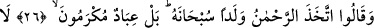

MELEKLER LÜTUF VE İHSANA
MAZHAR OLMUŞ KULLARDIR
26. Rahmân (olan Allah, melekleri) evlât edindi, dediler. Hâşâ! O, bundan
münezzehtir. Bilakis (melekler), lütuf ve ihsana mazhar olmuş kullardır.
27. O’ndan (emir almazdan) önce konuşmazlar; onlar, sâdece O’nun emri ile
hareket ederler.
28. Allah, onların önlerindekini de, arkalarındakini de (yaptıklarını da,
yapacaklarını da) bilir. Allah rızâsına ulaşmış olanlardan başkasına şefâat etmezler.
Onlar, Allah korkusundan titrerler!
29. Onlardan her kim: ”İlah O değil, benim!” derse, biz onu cehennemle
cezalandırırız. İşte biz, zalimlere böyle ceza veririz!
Huzâa kabilesinden bir topluluk, “Rahmân” olan Allah, melekleri “evlât edindi,
dediler.” Meleklerin Allâh’ın kızları olduğunu, Allah Teâlâ’nın cinlerin şerefli
olanlarıyla evlendiğini, onların da O’na melekleri doğurduğunu iddiâ ettiler.
“Hâşâ! O, bundan münezzehtir.” Yâni O’nun zâtı kendisine lâyık olduğu vechile,
münezzehtir. “
”, uzaklaştırdı anlamında
’dan masdardır. Ya da bu kelime tesbih
için alem olduğundan “O’nu tesbîh ederim.” demektir. Yâhut da “O’nu tesbih edin”
demektir.
Bahru’l-ulûm’da şöyle der: “
” kelimesinin, onların ahmakça sözlerine taaccüb/
şaşma ifadesi olması da mümkündür. Yâni, ‘Size en büyük ve güzîde nimetleri bahşeden
Allah, kendisine izâfe edilen evlad, arkadaş ve ortak edinmekten ne kadar uzak ve
yücedir!’ demektir.” el-Keşf’te “Tenzîh, taaccübe ters düşmez.” der.
“Bilakis” Onların dedikleri gibi melekler Allâh’ın kızları değildir. Onlar, “lütuf ve
ihsana mazhar olmuş” Allah Teâlâ tarafından yaratılmış, O’nun katında yakın kılınmış,
kulların hepsinden olmasa da çoğundan üstün kılınmış “kullardır.”
Meleklerin yaratılmış olmaları, Allâh’ın evlâdı olmalarıyla çelişir. Çünkü evlâd baba
ilişkisi onlar arasında bir münâsebetin olmasını gerektirir. Dolayısıyla onlar, Allâh’ın